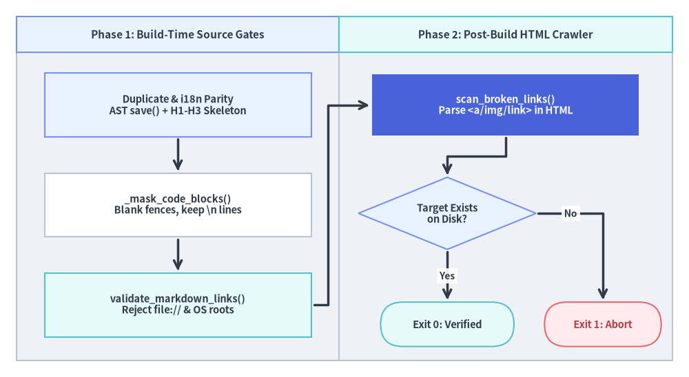
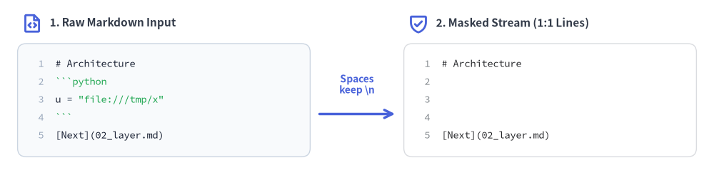

Link Scanner, Structural Parity & Quality Gates
Technical documentation is only as trustworthy as its cross-references and locale consistency. Across multi-page sites and multi-locale builds, broken relative paths, colliding image filenames, drifted translations, and accidental workstation path leaks (file:///... or /Users/...) undermine portability and expose private directory layouts.
Drawlib enforces repository hygiene through a Two-Phase Validation Architecture: build-time structural, duplicate, and source-link gates (doc_builder/progress.py, _image_ast.py, doc_builder/i18n.py, and compiler/base.py) paired with a post-build HTML link and asset crawler (_http_server/_link_scanner.py).

Source Code
from drawlib.canvas import save, setup
from drawlib.diagrams.flow import Decision, End, FlowDiagram, Process
from drawlib.styles import Colors, Styles
setup(width=124, height=68)
flow = FlowDiagram(
node_style=Styles.Neutral.patch(text_size=10.5),
edge_style=Styles.DarkBold,
edge_text_style=Styles.DarkBold.patch(text_size=10.0),
width=118,
height=62,
lane_orientation="vertical",
)
flow.add_lane(
"Phase 1: Build-Time Source Gates",
width=58,
style=Styles.Neutral,
header_style=Styles.PrimaryNeutral,
header_size=6.5,
text_style=Styles.DarkBold.patch(text_size=11.0),
)
flow.add_lane(
"Phase 2: Post-Build HTML Crawler",
width=60,
style=Styles.Neutral,
header_style=Styles.SecondaryNeutral,
header_size=6.5,
text_style=Styles.DarkBold.patch(text_size=11.0),
)
dup_gate = flow.add(
Process(
"Duplicate & i18n Parity\nAST save() + H1-H3 Skeleton",
width=48,
height=11.5,
style=Styles.PrimaryNeutral,
text_style=Styles.DarkBold.patch(text_size=10.5),
),
xy=(29.0, 46.0),
)
mask_step = flow.add(
Process(
"_mask_code_blocks()\nBlank fences, keep \\n lines",
width=48,
height=11.5,
style=Styles.Neutral.patch(shape_fill_color=Colors.White),
text_style=Styles.DarkBold.patch(text_size=10.5),
),
xy=(29.0, 28.0),
)
src_lint = flow.add(
Process(
"validate_markdown_links()\nReject file:// & OS roots",
width=48,
height=11.5,
style=Styles.SecondaryNeutral,
text_style=Styles.DarkBold.patch(text_size=10.5),
),
xy=(29.0, 10.0),
)
html_scan = flow.add(
Process(
"scan_broken_links()\nParse <a/img/link> in HTML",
width=48,
height=11.0,
style=Styles.PrimaryFlat,
text_style=Styles.WhiteBold.patch(text_size=10.5),
),
xy=(88.0, 46.0),
)
disk_chk = flow.add(
Decision(
"Target Exists\non Disk?",
width=32,
height=13.0,
style=Styles.PrimaryNeutral,
text_style=Styles.DarkBold.patch(text_size=10.5),
),
xy=(77.5, 26.5),
)
ok_end = flow.add(
End(
"Exit 0: Verified",
width=24,
height=8.0,
style=Styles.SecondaryNeutral,
text_style=Styles.DarkBold.patch(text_size=10.5),
),
xy=(77.5, 6.5),
)
err_end = flow.add(
End(
"Exit 1: Abort",
width=21,
height=8.0,
style=Styles.DangerNeutral,
text_style=Styles.DangerBold.patch(text_size=10.5),
),
xy=(105.5, 6.5),
)
dup_gate.connect(mask_step, padding=0.4)
mask_step.connect(src_lint, padding=0.4)
src_lint.connect(html_scan, start_side="right", end_side="left", padding=0.5).via((56.0, 10.0), (56.0, 46.0))
html_scan.connect(disk_chk, start_side="bottom", end_side="top", padding=0.4)
disk_chk.connect(ok_end, label="Yes", start_side="bottom", end_side="top", padding=0.4)
disk_chk.connect(err_end, label="No", start_side="right", end_side="top", padding=0.4)
flow.draw(xy=(3.0, 3.0))
save()
1. Why Local Filesystem Paths Are Forbidden
When engineers collaborate with AI coding agents—which frequently format IDE chat links as file:///home/user/... or /usr/local/...—local workstation paths can accidentally slip into Markdown prose:
- A link such as
[Architecture Spec](file:///Users/alice/repo/spec.md)opens locally on the author's laptop, masking the defect during authoring. - Once pushed to GitHub or deployed to static hosting, the link breaks for every reader and leaks private OS usernames and directory hierarchies.
Drawlib enforces a strict portability invariant: all local hyperlinks and asset paths must be relative (for example, 02_multi_target_exporters.md or ../_assets/logo.png), while external links must use standard web schemes (https://, http://, mailto:, tel:).
2. Phase 1: Build-Time Structural, Parity & Source Gates
Before and during compilation across build html, build markdown, build pdf, and build docx, Drawlib runs four static source checks:
2.1. Duplicate Output & AST save() Collision Guards
- Document & Block Target Deduplication (
check_document_output_duplicatesindoc_builder/progress.py): Scans all Markdown files andfile=<name>.pngfence attributes prior to rendering, aborting immediately if two chapters resolve to the same output path or if two distinctdrawlibblocks overwrite the same image file with different source code. - Script AST Inspection (
check_duplicate_script_outputsin_builder/_image_ast.py): Uses_SaveCallVisitor(ast.NodeVisitor)on standaloneimagesprojects to statically inspectsave(...)calls across.pyscripts and catch output filename collisions before executing user code.
2.2. Multi-Locale i18n Skeleton & Navbar Parity (doc_builder/i18n.py)
For projects declaring [i18n] in drawlib.toml, validate_i18n_project() and validate_i18n_site() enforce structural symmetry across every locale in langs:
- File Tree &
navbar.mdParity: Every locale directory (<src>/<lang>/) must contain the exact same relative.mdfile set and matchingnavbar.mdsection hierarchy (parse_navbar_markdown()innavbar.pyalso verifies that every localnavbar.mdlink target exists on disk). - Heading & Diagram Skeleton Parity:
extract_markdown_skeleton()comparesH1–H3heading depth sequences anddrawlibblock counts/filenames across locales so translations never silently drop a diagram or section.
2.3. Line-Preserving Code Masking & validate_markdown_links()
Documentation pages routinely include URLs or filesystem paths inside code examples (such as `file:///tmp/demo.png` or fenced Python snippets). Stripping code blocks before regex scanning would shift line counts and corrupt error diagnostics.
In compiler/base.py, _mask_code_blocks() replaces every non-newline character inside fenced code blocks and inline code spans with a space (" ") while preserving \n characters 1-to-1:

Source Code
from drawlib.canvas import save, setup
from drawlib.icons import phosphor
from drawlib.lines import line
from drawlib.smartarts import SourceCode, SourceCodeStyles
from drawlib.styles import Styles
from drawlib.text import text
setup(width=122, height=33)
fence = "`" * 3
raw_md = (
"# Architecture\n"
f"{fence}python\n"
'u = "file:///tmp/x"\n'
f"{fence}\n"
"[Next](02_layer.md)"
)
masked_md = (
"# Architecture\n"
" \n"
" \n"
" \n"
"[Next](02_layer.md)"
)
code_styles = SourceCodeStyles.get("default", text_size=10.0)
masked_styles = SourceCodeStyles.get("google", text_size=10.0)
phosphor.file_code((5.5, 29.0), width=3.6, style=Styles.PrimaryBold)
text(
(8.5, 29.0),
"1. Raw Markdown Input",
style=Styles.DarkBold.patch(halign="left", text_size=11.0),
)
SourceCode.draw(
xy=(3.0, 25.5),
width=50.0,
code=raw_md,
styles=code_styles,
code_lang="markdown",
show_linenum=True,
align="top_left",
)
line((54.5, 13.5), (67.5, 13.5), arrow_head="->", style=Styles.PrimaryBold)
text(
(61.0, 18.5),
"Spaces\nkeep \\n",
style=Styles.PrimaryBold.patch(text_size=10.0),
)
phosphor.shield_check((71.5, 29.0), width=3.6, style=Styles.PrimaryBold)
text(
(74.5, 29.0),
"2. Masked Stream (1:1 Lines)",
style=Styles.DarkBold.patch(halign="left", text_size=11.0),
)
SourceCode.draw(
xy=(69.0, 25.5),
width=50.0,
code=masked_md,
styles=masked_styles,
code_lang="markdown",
show_linenum=True,
align="top_left",
)
save()
Notice the backreference regex in compiler/base.py:
def _mask_code_blocks(text: str) -> str:
def repl(match: re.Match[str]) -> str:
return "".join("\n" if ch == "\n" else " " for ch in match.group(0))
# Backreference \1 matches 4-backtick outer fences containing 3-backtick inner blocks!
masked = re.sub(r"(?s)(`{3,}|~{3,}).*?\1", repl, text)
return re.sub(r"(`[^`\n]+`)", repl, masked)
Using ({3,}|~{3,}).*?\1` ensures that a 4-backtick documentation example wrapping an inner 3-backtick drawlib block is masked cleanly from outer opening fence to outer closing fence.
validate_markdown_links() then scans every line for both Markdown links/images (!?\[.*?\]\((.*?)\)) and raw HTML tags (<(?:a|img)\b[^>]*?\b(?:href|src)=["'](.*?)["']), raising a ValueError with the exact 1-based line number if any target matches:
- File URI Schemes:
file://orfile:/ - 8 OS Root Prefixes:
/usr/,/home/,/users/,/root/,/private/,/tmp/,/var/,/opt/ - Windows Drive Paths:
^[A-Za-z]:[\\/]
(Scope Boundary: validate_markdown_links() enforces URL scheme and path-prefix hygiene—it does not check whether relative .md targets exist on disk. Missing static Markdown images  emit non-fatal warnings to stderr via validate_markdown_images(), while full cross-page file existence is verified after HTML compilation in Phase 2.)
3. Phase 2: Post-Build HTML Crawler (_link_scanner.py)
Once HTML compilation finishes, scan_broken_links() (src/drawlib/_http_server/_link_scanner.py) crawls the generated output directory—running automatically at drawlib serve startup (unless --skip-check is passed) or headlessly in CI via drawlib serve <out_dir> --check:
| Aspect | validate_markdown_links (compiler/base.py) |
scan_broken_links (_http_server/_link_scanner.py) |
|---|---|---|
| Execution Stage | Build-time (html, markdown, pdf, docx) |
Post-build (drawlib serve / drawlib serve --check) |
| Input Format | Masked Markdown source (_mask_code_blocks) |
Compiled *.html tree via _LinkExtractor(HTMLParser) |
| Inspected Elements | [text](url), , raw <a href>, <img src> |
<a href>, <img src>, <link rel="stylesheet">, <link rel="alternate"> |
| Forbidden Local Paths | Rejects file://, 8 OS roots, Windows C:\ |
Rejects file://, 8 OS roots, Windows C:\ |
| Disk Existence Check | No (navbar.md checked separately; images warn) |
Yes — verifies target file or <dir>/index.html exists on disk |
URL #fragment Handling |
Ignored when standalone #anchor |
Standalone #anchor skipped; page.html#sec stripped via urldefrag before file check |
Resolution Rules in scan_broken_links()
- External & Special Schemes: Skips
http://,https://,mailto:,tel:,javascript:,data:, and protocol-relative//URLs. - Fragment Stripping (
urldefrag): Pure in-page anchors (#overview) are skipped, while combined links (02_layer_hierarchy.html#core) have their#fragmentstripped viaurllib.parse.urldefrag()and URL-unquoted before checking the target file on disk (DOM element IDs are not parsed). - Root-Relative vs. Page-Relative Resolution: Paths starting with
/(after passing the OS root prefix filter) resolve relative to the servedroot_dir, whereas relative paths resolve against the directory of the containing.htmlfile—accepting either a direct file match (os.path.isfile) or a directory containingindex.html.
Next, proceed to Chapter 5 to see how these compilers and scanners are exposed through Drawlib's command-line interface in CLI Architecture.